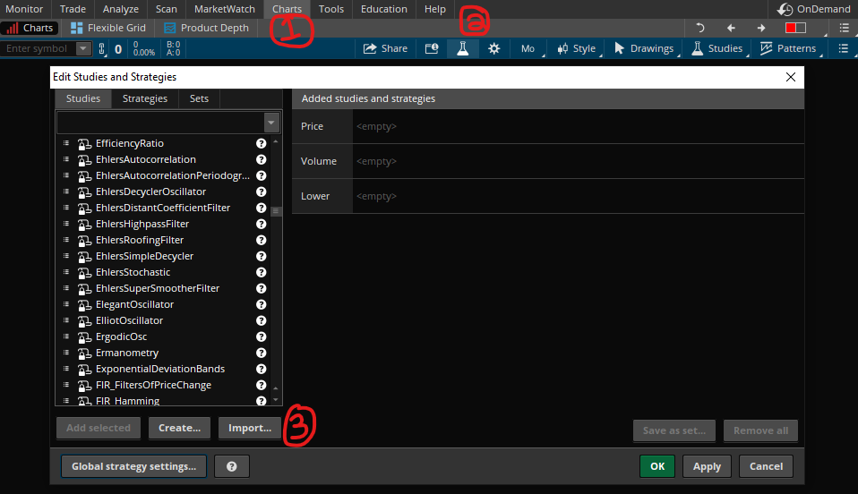

Description: Thinkorswim has a built-in standard deviation indicator called “StandardDevChannel”. The indicator calculates the standard deviation across the user’s desired time frame and then plots the upper and lower standard deviation around the mean/regression/best fit/trend line. The weakness in the indicator lies with the fact that a direct linear regression is typically a poor representation of stock price movements. My indicator attempts to remedy this by offering the option to calculate the mean line in an exponential manner while still offering the original linear option. This script also adds the option to use a start date alongside the original option of length of time, providing a quality life improvement for the user.
The differences between the original indicator and mine are shown in the image below.
There are multiple ways to import thinkScripts, here is one way (for reference, see image below):
Open thinkorswim and go to the "Charts" tab.
Click on the "Edit studies" button. It will look like a volumetric flask.
Click the import button and locate the thinkScript to upload.

If you want an alternative way, you can reference the thinkManual, under "Managing scripts in thinkScript® IDE", step 4.
Settings
price = type of price data.
deviations = how many standard deviations the upper and lower band should be.
full range = overrides the "length" and "start date" parameters and generates the chart for all available data.
extend right = continues the graph to the right, if you have any expansion area.
You can access the expansion area by going to: Charts > Chart Settings > Time axis > Expansion area
regression type = exponential or linear graphing
range type = define the data set either by how many bars back (length) or by where to start calculating (start date). Whichever choice is made, the other's setting will be ignored.
length = how many bars back.
start date = starting data point. The format is YYYYMMDD.
There is no date validation at this time, so invalid dates result in no graph being drawn. If the graph has a lower resolution time, such as a monthly chart, it will truncate the date to the nearest month rounded down. For example, on a monthly chart, Jan 20, 1970 (19700120), will snap to the Jan 1970.